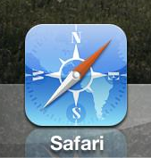
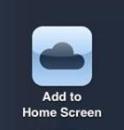

Ajuda iOS
Primeiramente, abra o link do aplicativo pelo safari.

Feito isso, clique no ícone a seguir logo após ter entrado na url do aplicativo.
Logo após, clique no ícone "Adicionar à tela de início".
